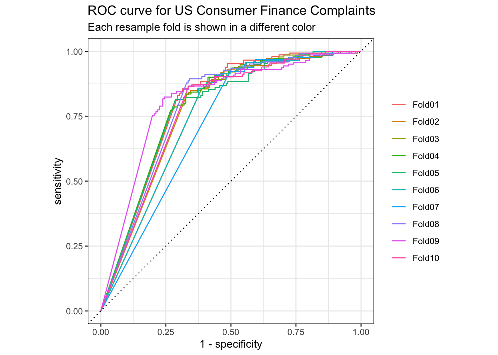
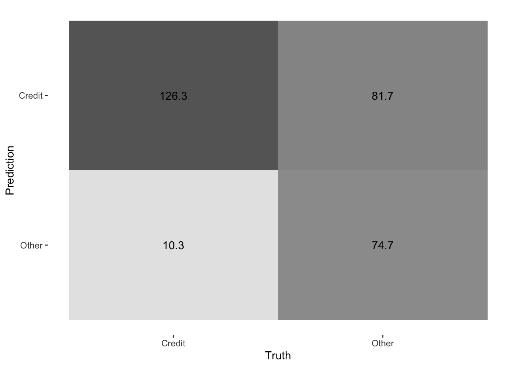
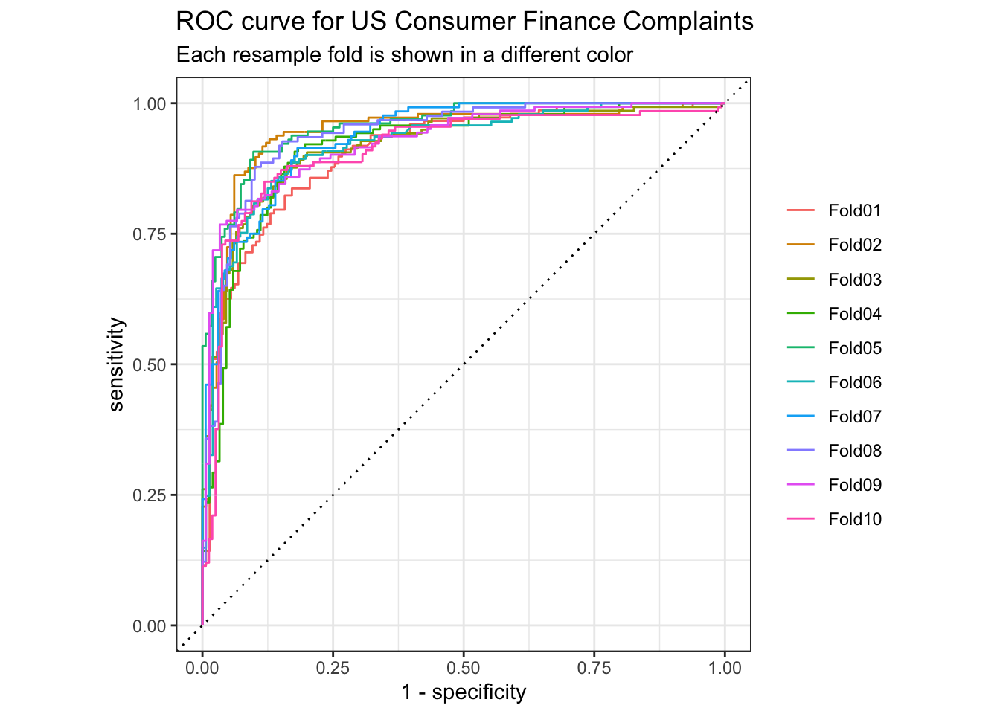
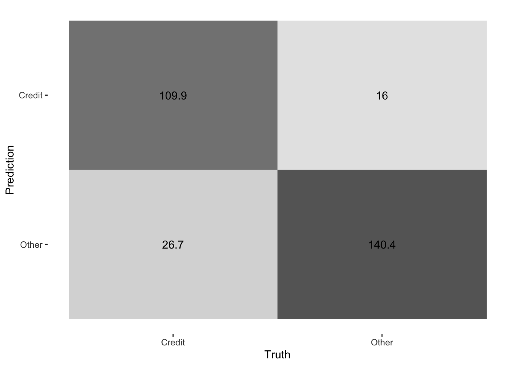
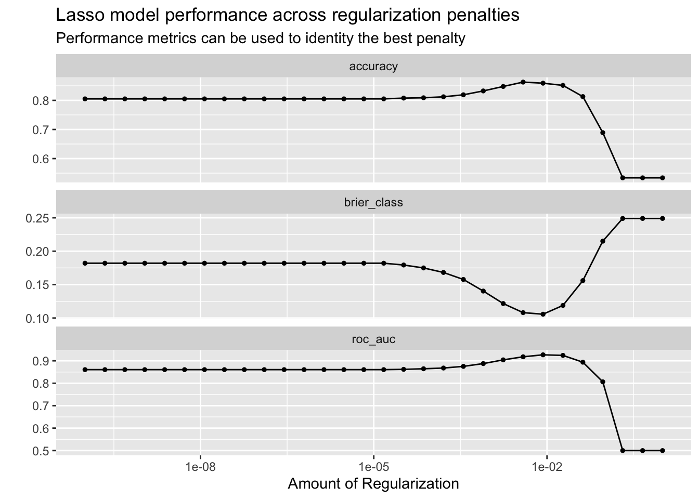

Chapter 4 機器學習：消費者投訴分類系統
核心目標：建立一個自動化的文本分類系統，以機器學習的方式，分析消費者的投訴之文字描述，預測其是否屬於「信用相關 (credit) 」或「其他產品 (other)」類別。
子目標：
開發一個準確的機器學習模型，結合數據預處理和模型訓練，實現分類任務的自動化。
使用斷詞、正則法、TF-IDF提取文本特徵。探索分類模型（如朴素貝葉斯、LASSO），比較模型的性能，並挑選最佳模型進行運用。
評估模型性能，包括準確率、ROC AUC、混淆矩陣等，確保模型能穩定應用。
- 最終目標：為企業提供自動化的文本分類工具，節省人工處理投訴的時間和成本，提升客戶服務的效率。
4.1 Step 1. Data preparation for machine learning
導入文本資料，共有18個欄位，117214筆資料。
## Rows: 117214 Columns: 18
## ── Column specification ────────────────────────────────────────────────────────
## Delimiter: ","
## chr (15): product, sub_product, issue, sub_issue, consumer_complaint_narrat...
## dbl (1): complaint_id
## date (2): date_received, date_sent_to_company
##
## ℹ Use `spec()` to retrieve the full column specification for this data.
## ℹ Specify the column types or set `show_col_types = FALSE` to quiet this message.## Rows: 117,214
## Columns: 18
## $ date_received <date> 2019-09-24, 2019-10-25, 2019-11-08, 2019…
## $ product <chr> "Debt collection", "Credit reporting, cre…
## $ sub_product <chr> "I do not know", "Credit reporting", "I d…
## $ issue <chr> "Attempts to collect debt not owed", "Inc…
## $ sub_issue <chr> "Debt is not yours", "Information belongs…
## $ consumer_complaint_narrative <chr> "transworld systems inc. \nis trying to c…
## $ company_public_response <chr> NA, "Company has responded to the consume…
## $ company <chr> "TRANSWORLD SYSTEMS INC", "TRANSUNION INT…
## $ state <chr> "FL", "CA", "NC", "RI", "FL", "TX", "SC",…
## $ zip_code <chr> "335XX", "937XX", "275XX", "029XX", "333X…
## $ tags <chr> NA, NA, NA, NA, NA, NA, NA, NA, NA, NA, N…
## $ consumer_consent_provided <chr> "Consent provided", "Consent provided", "…
## $ submitted_via <chr> "Web", "Web", "Web", "Web", "Web", "Web",…
## $ date_sent_to_company <date> 2019-09-24, 2019-10-25, 2019-11-08, 2019…
## $ company_response_to_consumer <chr> "Closed with explanation", "Closed with e…
## $ timely_response <chr> "Yes", "Yes", "Yes", "Yes", "Yes", "Yes",…
## $ consumer_disputed <chr> "N/A", "N/A", "N/A", "N/A", "N/A", "N/A",…
## $ complaint_id <dbl> 3384392, 3417821, 3433198, 3366475, 33853…提取美元金額
complaints$consumer_complaint_narrative |>
str_extract_all("\\{\\$[0-9\\.]*\\}") |>
compact() |>
head()## [[1]]
## [1] "{$21.00}" "{$1.00}"
##
## [[2]]
## [1] "{$2300.00}"
##
## [[3]]
## [1] "{$200.00}" "{$5000.00}" "{$5000.00}" "{$770.00}" "{$800.00}"
## [6] "{$5000.00}"
##
## [[4]]
## [1] "{$15000.00}" "{$11000.00}" "{$420.00}" "{$15000.00}"
##
## [[5]]
## [1] "{$0.00}" "{$0.00}" "{$0.00}" "{$0.00}"
##
## [[6]]
## [1] "{$650.00}"二元分類：將產品分類轉化為二元類別（“Credit” 和 “Other”），便於分類建模。
set.seed(1234)
complaints2class <- complaints |>
mutate(product = factor(if_else(
product == paste("Credit reporting, credit repair services,",
"or other personal consumer reports"),
"Credit", "Other"))
) 每 30 行選取一行，減少數據量，同時分割數據
dat= filter(complaints2class,row_number() %% 30 == 1)
dat=dat[,c(2,6)]
dat_split <- initial_split(dat, strata = product)
dat_train <- training(dat_split)
dat_test <- testing(dat_split)
dim(dat_train)## [1] 2930 2## [1] 978 2##
## Credit Other
## 1366 1564##
## Credit Other
## 456 5224.2 Step 2. Specifying step elements for Recipe
將 consumer_complaint_narrative（消費者投訴的文本描述）轉換為數值化的特徵，供模型（例如朴素貝葉斯、SVM 等）訓練使用。
dat_rec <-
recipe(product ~ consumer_complaint_narrative,
data = dat_train) |>
step_tokenize(consumer_complaint_narrative) |> # 分詞
step_stopwords(consumer_complaint_narrative, # 移除停用詞
stopword_source = "snowball") |>
# "snowball","smart","stopwords-iso"
step_tokenfilter(consumer_complaint_narrative, max_tokens = 1e3) |> # 篩選 Token
step_tfidf(consumer_complaint_narrative) # TF-IDF 轉換4.4 Step 4. K-Fold Cross-Validation
使用交叉驗證評估模型性能
（K-Fold Cross-Validation）：
- 將數據分為 K 等分（folds）。
- 每次訓練時使用 K-1 個部分的數據，剩下的一部分用於測試。
- 重複 K 次，確保每個部分都被用作一次測試集。
- 最後計算 K 次的平均性能作為模型的表現指標。
## # 10-fold cross-validation
## # A tibble: 10 × 2
## splits id
## <list> <chr>
## 1 <split [2637/293]> Fold01
## 2 <split [2637/293]> Fold02
## 3 <split [2637/293]> Fold03
## 4 <split [2637/293]> Fold04
## 5 <split [2637/293]> Fold05
## 6 <split [2637/293]> Fold06
## 7 <split [2637/293]> Fold07
## 8 <split [2637/293]> Fold08
## 9 <split [2637/293]> Fold09
## 10 <split [2637/293]> Fold104.5 Step 5. Models Selection
4.5.1 Model 1. Naive Bayes
# 定義 Naive Bayes 模型
if (FALSE) {
library(discrim)
nb_spec <- naive_Bayes() |>
set_mode("classification") |> #模型用於分類
set_engine("naivebayes")
nb_spec
nb_fit <- myWorkFlow |>
add_model(nb_spec) |> #
fit(data = dat_train)
}
nb_spec <- naive_Bayes() |>
set_mode("classification") |>
set_engine("naivebayes")
nb_wf <- workflow() |> #構建工作流
add_recipe(dat_rec) |> #加入前面定義的文本預處理步驟（如分詞、TF-IDF）
add_model(nb_spec) # 加入 Naive Bayes 模型
nb_wf## ══ Workflow ════════════════════════════════════════════════════════════════════
## Preprocessor: Recipe
## Model: naive_Bayes()
##
## ── Preprocessor ────────────────────────────────────────────────────────────────
## 4 Recipe Steps
##
## • step_tokenize()
## • step_stopwords()
## • step_tokenfilter()
## • step_tfidf()
##
## ── Model ───────────────────────────────────────────────────────────────────────
## Naive Bayes Model Specification (classification)
##
## Computational engine: naivebayes# 使用交叉驗證訓練模型
nb_rs <- fit_resamples(
nb_wf,
resample=Kfolds_CV,
control = control_resamples(save_pred = TRUE)
)## # A tibble: 3 × 6
## .metric .estimator mean n std_err .config
## <chr> <chr> <dbl> <int> <dbl> <chr>
## 1 accuracy binary 0.686 10 0.0106 Preprocessor1_Model1
## 2 brier_class binary 0.311 10 0.0105 Preprocessor1_Model1
## 3 roc_auc binary 0.772 10 0.00817 Preprocessor1_Model1accuracy（準確率）： 平均值：0.660（66%）。 表示模型在交叉驗證中，正確分類樣本的比例。 這表明 Naive Bayes 模型的準確率是中等水平，可能還有改進空間。
brier_class（Brier 分數）： 平均值：0.337。 測量模型預測的概率質量，值越小越好。 對於二元分類，0.337 表示模型的預測概率還算穩定，但還可以優化。
roc_auc（ROC 曲線下面積）： 平均值：0.763（76.3%）。 表示模型區分正類（Credit）和負類（Other）的能力，值越接近 1 越好。模型對正負類別的區分能力優於隨機猜測（0.5）。
## # A tibble: 2,930 × 7
## .pred_class .pred_Credit .pred_Other id .row product .config
## <fct> <dbl> <dbl> <chr> <int> <fct> <chr>
## 1 Credit 1.00e+ 0 1.05e-14 Fold01 16 Credit Preprocessor1_Mode…
## 2 Credit 1.00e+ 0 4.42e- 6 Fold01 31 Credit Preprocessor1_Mode…
## 3 Credit 1 e+ 0 6.23e-72 Fold01 33 Credit Preprocessor1_Mode…
## 4 Credit 1 e+ 0 3.94e-39 Fold01 41 Credit Preprocessor1_Mode…
## 5 Credit 1 e+ 0 2.60e-35 Fold01 42 Credit Preprocessor1_Mode…
## 6 Credit 1 e+ 0 2.32e-17 Fold01 47 Credit Preprocessor1_Mode…
## 7 Other 2.73e-16 1 e+ 0 Fold01 51 Credit Preprocessor1_Mode…
## 8 Credit 1 e+ 0 4.22e-52 Fold01 56 Credit Preprocessor1_Mode…
## 9 Credit 1 e+ 0 1.63e-29 Fold01 58 Credit Preprocessor1_Mode…
## 10 Credit 1.00e+ 0 3.35e-15 Fold01 74 Credit Preprocessor1_Mode…
## # ℹ 2,920 more rows混淆矩陣
| .metric | .estimator | .estimate |
|---|---|---|
| accuracy | binary | 0.6860068 |
| kap | binary | 0.3893372 |
| f_meas | binary | 0.7330238 |
| npv | binary | 0.8788235 |
| ppv | binary | 0.6072115 |
| precision | binary | 0.6072115 |
| recall | binary | 0.9245974 |
| sens | binary | 0.9245974 |
| spec | binary | 0.4776215 |
\(總體觀察\)
- 模型偏好檢測正類（Credit）：高召回率（0.925）和低特異性（0.478）表明模型更傾向於將樣本歸類為正類，導致假陽性較多。
- 負類預測相對穩定：陰性預測值（0.879）較高，說明模型對負類（Other）的預測相對穩定。
- 平衡性能表現：F1 分數（0.733）表明模型在精確率和召回率之間有一定的平衡，但提升精確率可以進一步改進模型性能。
\(視覺化\)
collect_predictions(nb_rs) |>
group_by(id) |>
roc_curve(truth = product, .pred_Credit) |>
autoplot() +
labs(
color = NULL,
title = "ROC curve for US Consumer Finance Complaints",
subtitle = "Each resample fold is shown in a different color"
)

4.5.2 Model 2. The null model (baseline)
null_classification <- null_model() |>
set_engine("parsnip") |>
set_mode("classification")
null_rs <- workflow() |>
add_recipe(dat_rec) |>
add_model(null_classification) |>
fit_resamples(
resample=Kfolds_CV,
control = control_resamples(save_pred = TRUE)
)
collect_metrics(null_rs)## # A tibble: 3 × 6
## .metric .estimator mean n std_err .config
## <chr> <chr> <dbl> <int> <dbl> <chr>
## 1 accuracy binary 0.534 10 0.00859 Preprocessor1_Model1
## 2 brier_class binary 0.249 10 0.000563 Preprocessor1_Model1
## 3 roc_auc binary 0.5 10 0 Preprocessor1_Model1- 準確率為 53.4%，說明在無任何模型學習的情況下，僅猜測數量最多的類別即可達到此準確率。
- Brier 分數為 0.249，僅僅基於類別比例猜測，誤差相對較大，優化空間大。
- ROC AUC 僅為 0.5，表示基準模型沒有任何區分正負類別的能力。
4.5.3 Model 3. LASSO
## Using regularization helps us choose a simpler model that we expect
## to generalize better to new observations, and variable selection
## helps us identify which features to include in our model.
lasso_spec <- logistic_reg(penalty = 0.01, mixture = 1) |>
set_mode("classification") |>
set_engine("glmnet")
lasso_spec## Logistic Regression Model Specification (classification)
##
## Main Arguments:
## penalty = 0.01
## mixture = 1
##
## Computational engine: glmnet## ══ Workflow ════════════════════════════════════════════════════════════════════
## Preprocessor: Recipe
## Model: logistic_reg()
##
## ── Preprocessor ────────────────────────────────────────────────────────────────
## 4 Recipe Steps
##
## • step_tokenize()
## • step_stopwords()
## • step_tokenfilter()
## • step_tfidf()
##
## ── Model ───────────────────────────────────────────────────────────────────────
## Logistic Regression Model Specification (classification)
##
## Main Arguments:
## penalty = 0.01
## mixture = 1
##
## Computational engine: glmnetset.seed(2020)
lasso_rs <- fit_resamples(
lasso_wf,
resample=Kfolds_CV,
control = control_resamples(save_pred = TRUE)
)
lasso_rs_metrics <- collect_metrics(lasso_rs)
lasso_rs_predictions <- collect_predictions(lasso_rs)
lasso_rs_metrics## # A tibble: 3 × 6
## .metric .estimator mean n std_err .config
## <chr> <chr> <dbl> <int> <dbl> <chr>
## 1 accuracy binary 0.854 10 0.00656 Preprocessor1_Model1
## 2 brier_class binary 0.107 10 0.00346 Preprocessor1_Model1
## 3 roc_auc binary 0.927 10 0.00493 Preprocessor1_Model1準確率（Accuracy）：模型準確率達到 85.4%，相比基準模型的 53.4% 提升明顯。LASSO 模型能有效利用數據中的特徵進行分類。
Brier 分數（Brier Class）：0.107 ，表示模型預測的結果與真實標籤的差距很小。
ROC AUC：0.927，模型對正負類別的區分能力非常好。
視覺化結果
lasso_rs_predictions |>
group_by(id) |>
roc_curve(truth = product, .pred_Credit) |>
autoplot() +
labs(
color = NULL,
title = "ROC curve for US Consumer Finance Complaints",
subtitle = "Each resample fold is shown in a different color"
)

\(Tuning\)
LASSO 模型有一個控制「特徵篩選強度」的開關，叫 penalty（懲罰值）。 這個懲罰值決定模型要 多狠心 地「扔掉」不重要的特徵（例如多餘的詞語）。 調參的目的是 找到最適合的懲罰值，既能讓模型 準確率高，又不會過於複雜。
tune_lasso_spec <-
logistic_reg(penalty = tune(), mixture = 1) |>
set_mode("classification") |>
set_engine("glmnet")
tune_wf <- workflow() |>
add_recipe(dat_rec) |>
add_model(tune_lasso_spec)
tune_rs <- tune_grid(
tune_wf,
resample=Kfolds_CV,
grid = grid_regular(penalty(), levels = 30),
#定義 penalty 的搜索空間，從小到大生成 30 個均勻分布的值。
control = control_resamples(save_pred = TRUE)
)
tune_rs## # Tuning results
## # 10-fold cross-validation
## # A tibble: 10 × 5
## splits id .metrics .notes .predictions
## <list> <chr> <list> <list> <list>
## 1 <split [2637/293]> Fold01 <tibble [90 × 5]> <tibble [0 × 3]> <tibble>
## 2 <split [2637/293]> Fold02 <tibble [90 × 5]> <tibble [0 × 3]> <tibble>
## 3 <split [2637/293]> Fold03 <tibble [90 × 5]> <tibble [0 × 3]> <tibble>
## 4 <split [2637/293]> Fold04 <tibble [90 × 5]> <tibble [0 × 3]> <tibble>
## 5 <split [2637/293]> Fold05 <tibble [90 × 5]> <tibble [0 × 3]> <tibble>
## 6 <split [2637/293]> Fold06 <tibble [90 × 5]> <tibble [0 × 3]> <tibble>
## 7 <split [2637/293]> Fold07 <tibble [90 × 5]> <tibble [0 × 3]> <tibble>
## 8 <split [2637/293]> Fold08 <tibble [90 × 5]> <tibble [0 × 3]> <tibble>
## 9 <split [2637/293]> Fold09 <tibble [90 × 5]> <tibble [0 × 3]> <tibble>
## 10 <split [2637/293]> Fold10 <tibble [90 × 5]> <tibble [0 × 3]> <tibble>## # A tibble: 90 × 7
## penalty .metric .estimator mean n std_err .config
## <dbl> <chr> <chr> <dbl> <int> <dbl> <chr>
## 1 1 e-10 accuracy binary 0.805 10 0.00713 Preprocessor1_Model01
## 2 1 e-10 brier_class binary 0.182 10 0.00601 Preprocessor1_Model01
## 3 1 e-10 roc_auc binary 0.861 10 0.00589 Preprocessor1_Model01
## 4 2.21e-10 accuracy binary 0.805 10 0.00713 Preprocessor1_Model02
## 5 2.21e-10 brier_class binary 0.182 10 0.00601 Preprocessor1_Model02
## 6 2.21e-10 roc_auc binary 0.861 10 0.00589 Preprocessor1_Model02
## 7 4.89e-10 accuracy binary 0.805 10 0.00713 Preprocessor1_Model03
## 8 4.89e-10 brier_class binary 0.182 10 0.00601 Preprocessor1_Model03
## 9 4.89e-10 roc_auc binary 0.861 10 0.00589 Preprocessor1_Model03
## 10 1.08e- 9 accuracy binary 0.805 10 0.00713 Preprocessor1_Model04
## # ℹ 80 more rows\(視覺化\)
autoplot(tune_rs) +
labs(
title = "Lasso model performance across regularization penalties",
subtitle = "Performance metrics can be used to identity the best penalty"
)
## # A tibble: 5 × 7
## penalty .metric .estimator mean n std_err .config
## <dbl> <chr> <chr> <dbl> <int> <dbl> <chr>
## 1 0.00853 roc_auc binary 0.927 10 0.00498 Preprocessor1_Model24
## 2 0.0189 roc_auc binary 0.924 10 0.00532 Preprocessor1_Model25
## 3 0.00386 roc_auc binary 0.918 10 0.00551 Preprocessor1_Model23
## 4 0.00174 roc_auc binary 0.904 10 0.00625 Preprocessor1_Model22
## 5 0.0418 roc_auc binary 0.894 10 0.00582 Preprocessor1_Model26tune_rs_auc <- show_best(tune_rs, metric="roc_auc") |>
pull(mean) |>
max() |>
round(3)
chosen_auc <- tune_rs |>
select_by_one_std_err(metric = "roc_auc", -penalty)
chosen_auc## # A tibble: 1 × 2
## penalty .config
## <dbl> <chr>
## 1 0.0189 Preprocessor1_Model254.5.4 Choosing the Best Model out-of tuned LASSOs
## ══ Workflow ════════════════════════════════════════════════════════════════════
## Preprocessor: Recipe
## Model: logistic_reg()
##
## ── Preprocessor ────────────────────────────────────────────────────────────────
## 4 Recipe Steps
##
## • step_tokenize()
## • step_stopwords()
## • step_tokenfilter()
## • step_tfidf()
##
## ── Model ───────────────────────────────────────────────────────────────────────
## Logistic Regression Model Specification (classification)
##
## Main Arguments:
## penalty = 0.018873918221351
## mixture = 1
##
## Computational engine: glmnetfitted_lasso <- fit(final_lasso, dat_train)
fitted_lasso |>
extract_fit_parsnip() |>
tidy() |>
mutate(term = str_remove(term, "tfidf_consumer_complaint_narrative_")) |>
arrange(-estimate)## # A tibble: 1,001 × 3
## term estimate penalty
## <chr> <dbl> <dbl>
## 1 received 7.77 0.0189
## 2 situation 6.45 0.0189
## 3 money 6.37 0.0189
## 4 debt 5.37 0.0189
## 5 bank 4.65 0.0189
## 6 funds 4.53 0.0189
## 7 pay 4.47 0.0189
## 8 statements 4.29 0.0189
## 9 customer 4.27 0.0189
## 10 interest 3.88 0.0189
## # ℹ 991 more rowsfitted_lasso |>
extract_fit_parsnip() |>
tidy() |>
mutate(term = str_remove(term, "tfidf_consumer_complaint_narrative_")) |>
arrange(estimate)## # A tibble: 1,001 × 3
## term estimate penalty
## <chr> <dbl> <dbl>
## 1 requisite -21.1 0.0189
## 2 equifax -11.7 0.0189
## 3 reporting -10.9 0.0189
## 4 experian -10.7 0.0189
## 5 report -10.2 0.0189
## 6 credit -9.69 0.0189
## 7 reported -5.45 0.0189
## 8 fcra -5.34 0.0189
## 9 information -5.31 0.0189
## 10 transunion -5.31 0.0189
## # ℹ 991 more rows